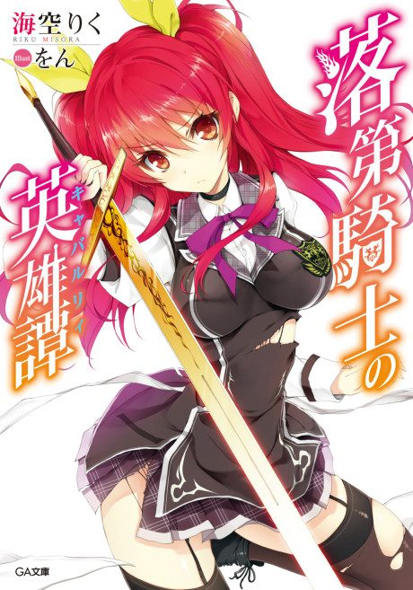
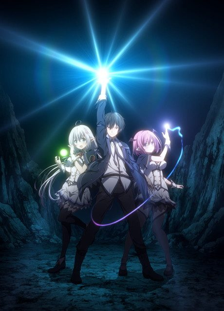
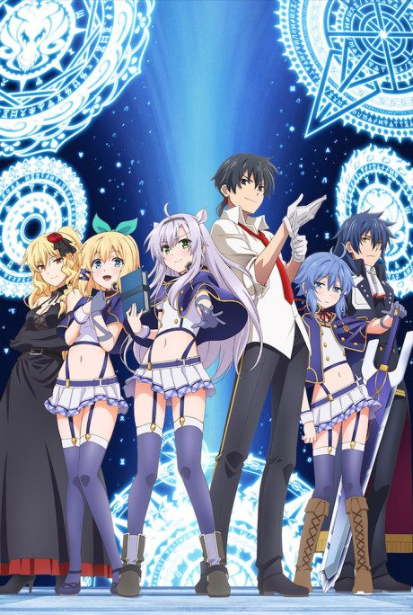
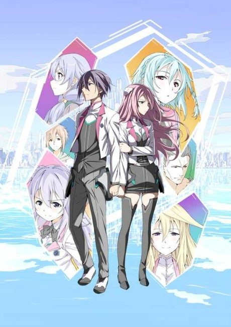

Chivalry of a Failed Knight
落第騎士の英雄譚（キャバルリィ）
Ikki is the worst student at a school for magic knights, but he beats Stella, a princess and top student, in a duel, and she becomes his roommate.
After the anime, read the light novel from Volume 4.
7.2AniList score
—Animeter, no votes yet
12episodes
Rate it or report where you stopped
Is it worth pushing through?
Built from what visitors report across all 12 episodes.
Loading reports…Checking what other people said about this one.
Sign in above with your email to add your report.
More like Chivalry of a Failed Knight
 Manga Vol. 77.2
Manga Vol. 77.2

Manga Vol. 46.2
Manga Vol. 56.8 Unclear7.9
Unclear7.9
Unclear5.8
Sky Wizards Academy Original6.9
Original6.9
 Unclear7.0
Unclear7.0
Manga Ch. 186.7
Vermeil in Gold
Manga Vol. 76.5 Unclear6.4
Unclear6.4
 Unclear6.3
Unclear6.3
 Unclear6.2
Unclear6.2